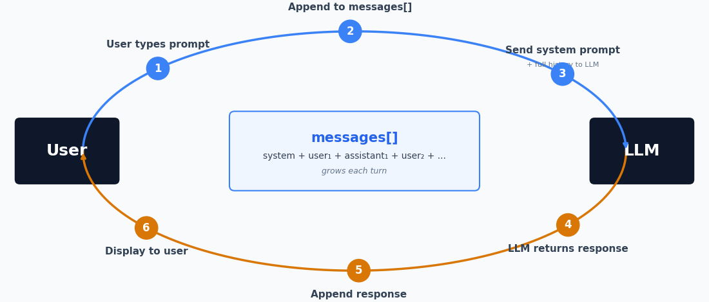
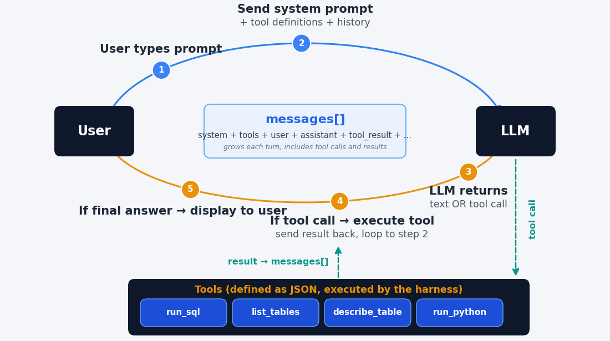

Rice Business
October 2, 2026
Download these slides any time:
kerryback.com/ai-business.pdf
| Use | What it looks like |
|---|---|
| Chatting about corporate documents | Retrieval-augmented generation |
| Personal assistants | Calendar, email, notes, scheduling |
| Data access and analysis | Query the database, build the chart |
| Document preparation | Memos, decks, reports, filings |
| Customer support | Phone, email, chat, triage of tickets |
| Financial trading | Signals from news, filings, transcripts |
| Software development | Writing, reviewing, and testing code |
| Marketing and content | Copy, campaigns, personalization |
| Contract and legal review | First-pass review, clause extraction |
A chatbot returns text. An agent is a chatbot with tools it can ask to use.


The model
Decides. Emits text: sometimes an answer, sometimes a request to use a tool.
The harness
Ordinary software wrapped around the model. Runs the tool the model asked for.
The tools
The things that touch files, databases, and other systems.
The model never runs anything itself. It chooses tools to use. The harness executes, and the harness returns information about the tool outcome to the model.
Read and write files
Documents, spreadsheets, code.
Run code
Python, SQL, the command line.
Search and fetch the web
Run a search, then download and read a page.
Use a screen
Click and type in a browser or a desktop app.
Call a service
A database or another program, even another agent.
Start another agent
A subagent with its own instructions and tools.
| Tool | What it does |
|---|---|
| Read, Write, Edit | Open and change files — documents, spreadsheets, code |
| Bash | Run commands and programs on the machine |
| Glob, Grep | Find files, and search inside them |
| WebSearch, WebFetch | Run a search, then download and read a page |
| Task | Start a subagent with its own instructions |
| MCP connectors | Call an outside service: a database, an API |
Written instructions for a specific task, together with the code scripts and other files that task needs.
| Example | What it is for |
|---|---|
xlsx |
Excel workbooks |
pptx |
PowerPoint decks |
docx |
Word documents |
frontend-design |
Web pages and interfaces |
finance-data |
Market and economic data |
The first four come from Anthropic. finance-data is one Claude wrote for me.
lab-oct.rice-business.orgfirstname_lastname — hyphenate a surname that has more than one partjgsbaiWhat runs
Claude Code running Claude Sonnet
What is installed
Supporting software (Python, JavaScript), Python libraries, Claude plugins
What you see
File browser (download and upload), terminal, local browser view (View tab)
Everything running in the cloud, billed to the school.
| Where | What |
|---|---|
| Right panel | Claude Code. The prompt window is at the bottom. |
| Left panel | File Browser (default), Terminal, View. Ignore Terminal and View for now. |
| Three-dots menu on left | Upload (from your laptop) and Download (to your laptop). |
Prompt
Build an Excel workbook containing a mortgage amortization table. Include a chart of the amount going to interest and the amount going to principal each month.
Use the Refresh button above/right of the left pane to see the new file in the File Browser. MS Office is not installed here — download Office documents from the three dots menu and open them on your laptop.
Five spreadsheets from a fictitious company — customers, orders, order details, products, categories — are in the data folder.
Prompts
The model writes code to merge orders with order details and then merge with customers, then add revenue across all order details of orders from customers in each country.
Tell Claude you want a single-page HTML app that allows the user to input mortgage terms and computes and displays the amortization table and a chart of the amount going to principal and interest each month.
Refresh and locate the html file it creates in the lab’s file explorer. Then download, locate in your File Explorer (Mac Finder), and double click.
Enough of the mechanism to explain what these models are good at and where they fail.
Text is cut into pieces from a fixed vocabulary before the model sees any of it.
"The cat sat on the mat" -> ["The", " cat", " sat", " on", " the", " mat"]
"Unbelievable" -> ["Un", "believ", "able"]Common words stay whole; rare and long words break into pieces. A typical vocabulary runs to about 100,000 tokens.
Numbers break on the same rules, which have nothing to do with arithmetic. 13,963,378.65 reaches the model as a handful of unrelated pieces.
Each token is associated with a vector, meaning a list of numbers. So, a sequence of text becomes a sequence of lists of numbers.
Each token is a list
“king” becomes a list of 4,096 numbers. “queen” becomes a different but somewhat similar list of 4,096 numbers.
Tokens used in similar contexts end up near each other.
The space is mostly empty
There are far more possible vectors than there are tokens, so most points in the space name nothing.
The prediction can land between tokens. The “closest” token is usually selected but not always (so LLM output is somewhat random).
Given the tokens (lists of numbers) so far, predict the token (list of numbers) that comes next. That is the entire operation.
Everything a model appears to do — answering, summarizing, writing code, refusing — is that one prediction, repeated.
The idea
\(y = 4x\) is a function. The 4 is a parameter.
Change it to 3 and you have the same structure with different behavior.
The scale
Same idea with perhaps trillions of parameters, arranged as a transformer — the architecture published by Google researchers in 2017.
A model trained only to predict the next token continues your text. It does not answer a question.
<|user|> your question <|assistant|>.<|assistant|> is a useful reply.The mechanism did not change. What changed is which continuation is the likely one. GPT became Chat-GPT in 2022.
Gen AI in Business